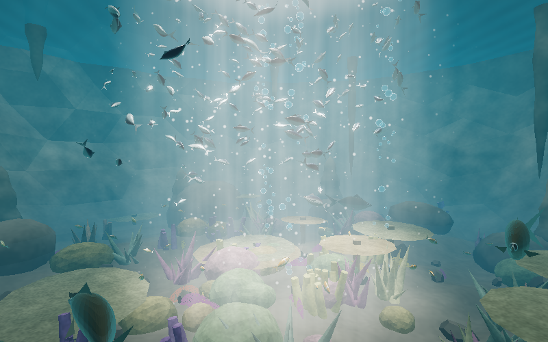
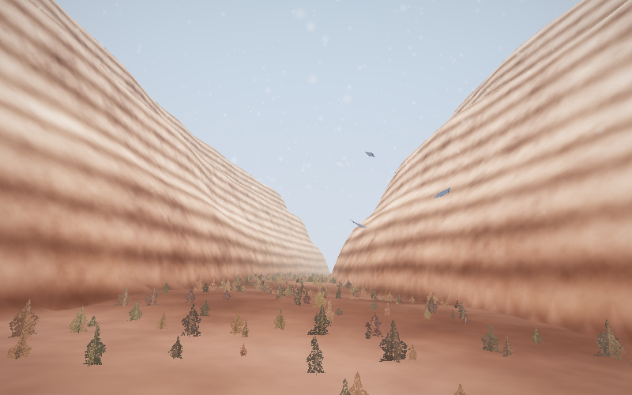
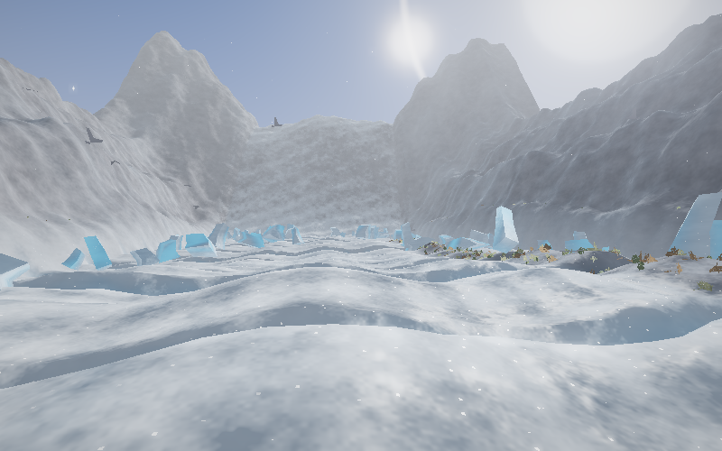
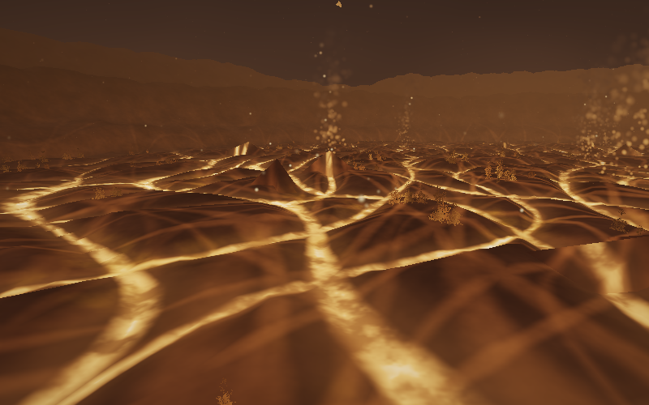
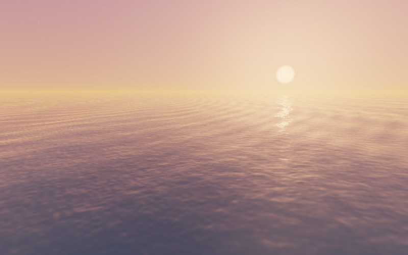
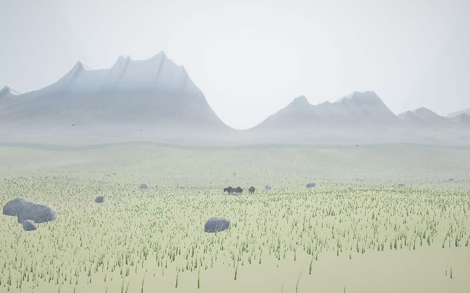
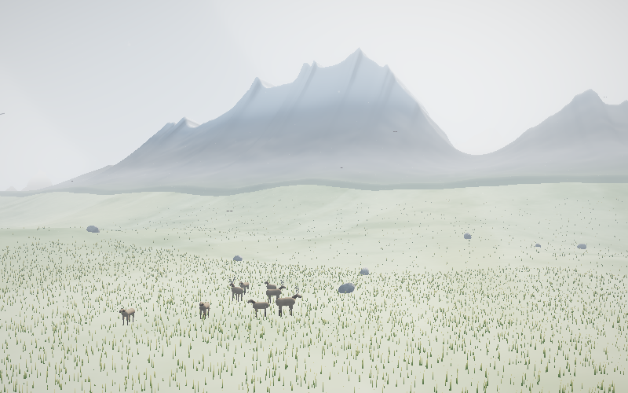
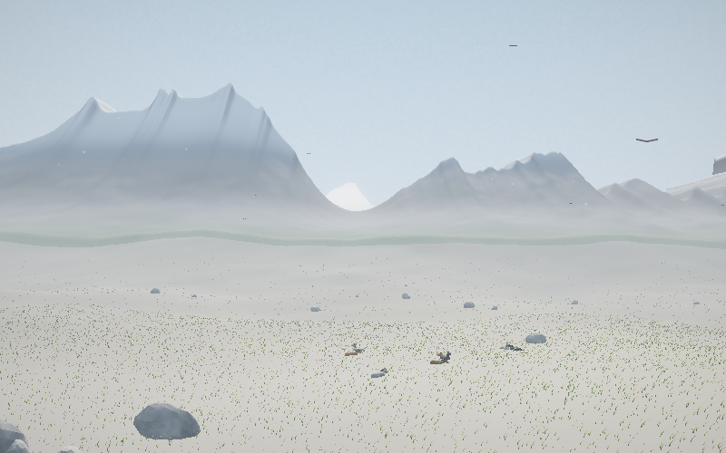
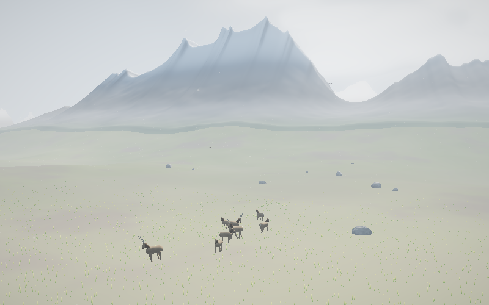
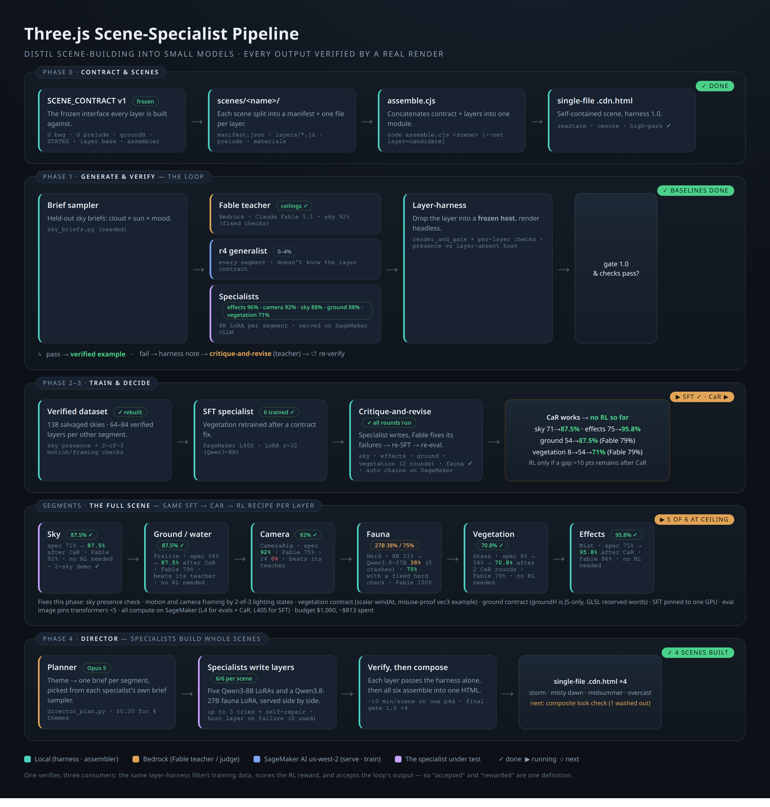

Specialist models Playable Three.js worlds where every layer — sky, ground, camera, vegetation, fauna, effects — is written by a small model fine-tuned on that one layer, and nothing is accepted until it renders.
How they were made
A theme goes in; six briefs come out; six specialists write six layers; a render harness accepts or rejects each one; the survivors are assembled into a single self-contained HTML file.
1 · Plan
A planner turns "a storm breaking over the high prairie" into one brief per layer, chosen so the six agree with each other.
2 · Write
Each specialist writes only its own layer against a frozen contract — an 8B LoRA per segment, and a 27B for the herd.
3 · Verify
Every layer is swapped into the frozen host and rendered headless. It must parse, run, render, animate, hold up across the lighting states, and pass its own checks.
4 · Compose
Accepted layers are assembled and the finished scene is rendered again — a layer that passes alone can still wash out in company.
Six worlds, one contract
These are the reference worlds. Each is hand-built and hosts the layers the models write, so they are also the yardstick every check is calibrated against. They deliberately disagree with each other about where light comes from and what the medium is — a specialist trained on one world learns that world, and the goal is that it learns the contract instead. Each is one self-contained file; click the state buttons to change the light.

Open daylight landscape — one sun, wind over turf. The world all six specialists were trained on.
Open world →
Light enters as a single shaft through a hole in the roof; caustics on the floor, and a diver's torch as a second, moving source.
Open world →
A slot canyon. Most of the light on a shaded wall arrives bounced off the opposite sunlit wall, not from the sky — layers that ignore it read as flat cut-outs.
Open world →
Inverted exposure: very bright, low contrast, snow scattering light back up so shadows are blue and filled, never black. The ice is translucent and glows from within.
Open world →
Light comes from the ground — glowing fissures in cooled basalt. Faces point down toward the light, shadows fall upward, and the sky is the darkest thing in frame.
Open world →
Open ocean, twenty lighting states. A partial world — ocean, rain and sky only — kept because the water-presence check is calibrated against it.
Open world →Every world above passes the same five structural gates — parses, runs, renders, animates, holds up across states — with no changes to the harness. That the gates transfer unchanged across worlds this different is the main evidence that what is being verified is the contract, not the scenery.
Four scenes, one valley
Same frozen host, same six slots, written by the specialists rather than by hand. Only the written layers differ. Each was built in about ten minutes and is a single file you can open.




The planner chose elk for the last one — the brief sampler it draws from has no deer. Nothing here was hand-edited; these are the files the loop produced.
What the specialists score
Every segment is measured on 24 held-out briefs it has never seen, against the frontier model that taught it. A layer passes only if it renders and clears that segment's own checks.
| Layer | Specialist model | Scores | Teacher model | Scores | How it got there |
|---|---|---|---|---|---|
| Mist | Qwen3-8B LoRA | 95.8% | Claude Fable 5.1 | 96% | trained, then one critique-and-revise round |
| Camera | Qwen3-8B LoRA | 92% | Claude Fable 5.1 | 75% | trained once — beats its teacher |
| Ground | Qwen3-8B LoRA | 87.5% | Claude Fable 5.1 | 79% | 54% → 87.5% after critique-and-revise |
| Sky | Qwen3-8B LoRA | 87.5% | Claude Fable 5.1 | 92% | 71% → 87.5% after critique-and-revise |
| Grass | Qwen3-8B LoRA | 70.8% | Claude Fable 5.1 | 79% | 8% → 54% → 70.8% over two rounds |
| Herd | Qwen3.8-27B LoRA | 37.5% | Claude Fable 5.1 | 100% | the hard one — 8B stalled at 21%; a 27B doubled it |
Every specialist is an 8-billion-parameter LoRA except the herd, which needed a 27B. The herd is the honest failure here: more data and a second training round barely moved it, and the layers that fail mostly render a herd too small for the verifier to see.
The verifier is the specification
The loop only works because acceptance is mechanical. That cuts both ways — every real mistake in this project was a verifier that measured the wrong thing.
| What happened | What it taught |
|---|---|
| Sky domes that never wrote a pixel passed every gate | added a presence check against a dome-less render; the earlier 92% was void |
| Herds counted as “invisible” while plainly visible on screen | the check counted changed screen tiles, so a compact herd failed however clear it was |
| A contract example got copied verbatim into 47 layers | contracts are written as prose now, never as sample code |
| A scene passed every layer check and rendered near-white | layers are verified alone; the composite needed its own check |
| A whole world rendered upside down and still scored a perfect gate | structural gates prove code runs, not that the result is right; a camera roll flipped the up vector and nothing caught it |
Deriving the contract instead of writing it
Every contract bug in this project was a hand-written description drifting from the code it described:
a required #define never mentioned, helpers documented as taking a vec3 that take a
vec2, a varying the fragment shader had to re-declare. All were invisible to the models trained on that
world — they had learned the convention from data — and fatal to a fresh model reading the contract literally.
So the world half of the prompt is now extracted from source, not written. A generator reads the host and emits the helper signatures, which shader strings are complete programs versus snippets, uniform names with their GLSL types, which per-state values are scalars versus colours, and the world's scale in world units. A new world costs an extraction plus a paragraph of intent, and the description cannot drift from the code because it is generated from it.
The six worlds beyond High Park were built to test exactly this: the same derived-contract format, with no harness changes, across worlds that disagree about where light comes from.
The pipeline
